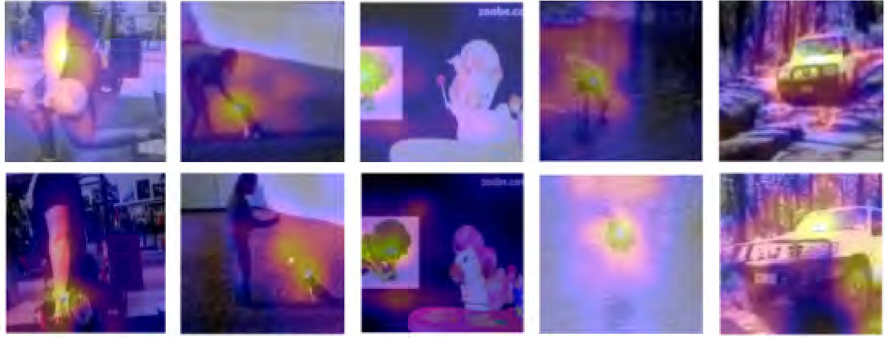

3 SSL Video Pre-training
Video should be great for pertaining representation for images, you can see objects change shape and oriantation. For some reason representation pertained on video are not as good as representation pertained on ImageNet. This paper tries to explain why this is the case and proposes ways to close this gap.
Method
MoCLR is the baseline contrastive learning method they compare against. The method produces multiple views of the same image, average-pools the feature map of all the views, and passes the averaged pooled feature through an MLP. The loss forces all views have the same reduced feature (trained with contrastive loss). The training is done with two copies of the same network, one being trained by gradient decent and the other by exponential moving average of the other.
What’s new here?
Larger Random Sized Crops
Contrastive learning methods are designed to fit ImageNet like datasets. ImageNet means single object images and lower variability in image content. Lowe variability allows us to get away with aggressive cropping (8% of the original image). In videos (or natural datasets) aggressive cropping can get you a totally different semantic meaning.
Attention Pooling
In videos we can do temporal augmentation (look at nearby frames as being similar). Here average pooling might not be as good. Instead of doing object tracking or something similar, they predict an attention mask and use it to do the pooling. The masking is done on multiple scales of the network and all pooled vectors get concatenated before going through the final MLP net. It seems that the attention masks learn to focus on similar stable features in the image pair. 
Curate dataset to match imagenet
Tasks that we use to measure the quality of a representation are imagenet biased so they do some curation to match distribution of videos to that of imagenet images (by running inference on frames and looking for imagenet categories).
Sources
- Parthasarathy et al. (2022)